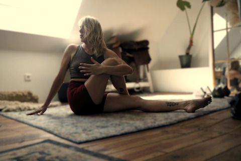

Bienvenue dans mon univers
Je suis Laurie Ghittori, et je vous accompagne à Coussac-Bonneval. Ici, entre les paysages apaisants de notre campagne et le rythme paisible de la nature, je vous invite à découvrir le Hatha Yoga ainsi que le Yoga du Cachemire.
À Coussac-Bonneval : Le yoga de proximité
Pratiquer à la campagne, c'est profiter d'un cadre authentique pour débrancher du quotidien. Que vous habitiez le village ou les environs, je vous accueille avec bienveillance, quel que soit votre niveau.
En Entreprise : Le bien-être au travail
Parce que nos journées professionnelles sont souvent intenses, je déplace ma pratique au sein des entreprises. Le Hatha Yoga et le Yoga du Cachemire sont des outils puissants pour :
- Prévenir les troubles musculosquelettiques (maux de dos, tensions cervicales).
- Réduire le stress et améliorer la concentration des équipes.
Ce que je propose
Activités
Cours de Yoga
Le yoga permet de prendre soin de son corps et de son mental. Je pense pouvoir apporter les bienfaits à d'autres.
Une approche physiologique : la Méthode De Gasquet
Ma pratique s'appuie sur la méthode du Dr Bernadette de Gasquet. Qu'est-ce que cela change pour vous ? C'est l'assurance d'une pratique « sans dégâts ».
Nous travaillons avec une attention constante sur l'auto-grandissement.
Nous protégeons le dos et le périnée à chaque mouvement.
Nous utilisons une respiration physiologique qui respecte votre anatomie.
C'est un yoga intelligent, qui s'adapte à votre corps et non l'inverse.
Hatha Yoga — L'équilibre entre corps et esprit
Le Hatha Yoga est une discipline millénaire accessible à tous. Ha (le soleil) et Tha (la lune) représentent l'équilibre entre l'effort et le lâcher-prise.
Chaque séance est un voyage intérieur en cinq étapes :
- Les asana : postures tenues qui renforcent, assouplissent et libèrent les tensions.
- Le pranayama : exercices de respiration pour calmer le mental et retrouver une énergie claire.
- La Méditation : Observer ses pensées sans jugement et s'ancrer dans l'instant présent.
- La Relaxation : Un moment de calme profond pour repartir avec plénitude.
Yoga du Cachemire — Explorer sans forcer
Le Yoga du Cachemire passe par les mêmes étapes que le Hatha Yoga, mais les anime d'un autre souffle : celui d'une présence ouverte, sensible, débarrassée de l'idée de performance.
Le but n'est pas d'aller plus loin, mais d'aller plus finement. C'est un yoga dont l'objectif essentiel est la joie d'explorer, sans pression, sans comparaison, sans devoir.
Lorsque l'on entre dans une posture en forçant, les muscles enregistrent une contraction protectrice qui sera rejouée chaque fois. Plus on force, plus le corps se protège.
Nous entrons donc dans les postures sans chercher la limite maximale. Dès qu'une tension forte apparaît, nous revenons en arrière. Grâce à l'écoute, au souffle, aux visualisations et à l'évocation, la posture peut s'ouvrir d'elle-même.
Cours de Pilates
À partir de septembre 2027
Conditionnement physique et mental : renforcer et mobiliser les chaînes musculaires profondes.
- Travail sur les articulations et le mouvement neuro-musculaire.
- Décompresser le rachis et retrouver une bonne posture.
« Le yoga sans méditation, c'est du Pilate. » — Laurie, 2026
Munz Floor©
À partir de septembre 2027
Une nouvelle discipline bientôt disponible. Plus d'informations à venir.

"Le yoga peut vous aider à progresser dans de nombreux sports, à mieux encaisser les aléas de votre vie — professionnelle, grossesse, et plus encore."
Quand pratiquer
Planning des cours
Retrouvez les horaires et lieux de chaque cours. Le planning est mis à jour en temps réel.
Investissez en vous
Tarifs
Particulier
Carnet de 10 séances
120 € soit 12 € la séance · durée : 1 h 15
- ✦ Première séance d'essai gratuite
- ✦ Hatha Yoga & Yoga du Cachemire
- ✦ Suivi personnalisé
Entreprises
Jusqu'à 10 personnes
50 € + 5 € par participant · durée : 30 min à 1 h 15
- ✦ Idéal entreprises, associations, EHPAD
- ✦ Durée adaptée à vos besoins
- ✦ Je me déplace chez vous
Parlons-en
Contact
Addresse
371 le Puy Nord
87500 Coussac-Bonneval
Cliquez pour afficher
Télephone
tel3.11.11.11.11
Laissez un message ou envoyez un SMS pour que je vous rappelle
Disponibilité
Lundi - Vendredi, 9h - 18h
Entreprise Individuelle
Code NAF : 85.51Z — Enseignement de disciplines sportives
SIRET : En cours · N° TVA : En cours
Ressources
Blog & Articles
Conseils, réflexions et découvertes autour du Yoga et du bien-être.
À propos
Mon Parcours
 Je suis Laurie. Ancienne enseignante, passionnée de sports de combat depuis l'enfance et de Yoga depuis l'adolescence. Je crois que le Yoga peut aider chacun à prendre soin de son corps.
Je suis Laurie. Ancienne enseignante, passionnée de sports de combat depuis l'enfance et de Yoga depuis l'adolescence. Je crois que le Yoga peut aider chacun à prendre soin de son corps.
4 ans
Début des sports de combat : judo, aïkido, viet vo dao, krav maga, karaté.
16 ans
Découverte du Yoga lors d'un voyage en Inde. Début d'une pratique régulière.
Karaté
7 ans de karaté intensif — maîtrise du corps et de l'esprit, complémentaire du Yoga.
Blessure
Blessure au genou. Arrêt des sports de combat violents, retour au Yoga pour continuer le sport.
CrossFit
Grâce au Yoga, reprise du sport intense malgré la blessure : CrossFit et plus encore.
Maraîchage
5 ans de maraîchage BIO. Le Yoga et le Pilate permettent de continuer sans douleurs dorsales.
Formation yoga
Méthode De Gasquet : le Yoga en sécurité pour le corps. Diplôme RNCP « Enseigner la transmission du Yoga » — École Nationale des Professeurs de Yoga.
Aujourd'hui
Formation avec Yotan Baranes : Hatha Yoga et Yoga du Cachemire, particulièrement adapté aux corps fragilisés.

© 2025 | Mixed with Bootstrap v3.1.1 and https://fontawesome.com/ | Baked with JBake 2.7.0-rc.7 with recipe from EcoWeb by open-cy.life and WebLeger | Version 0.0.1-SNAPSHOT at Jun 1, 2026 11:15:14 AM